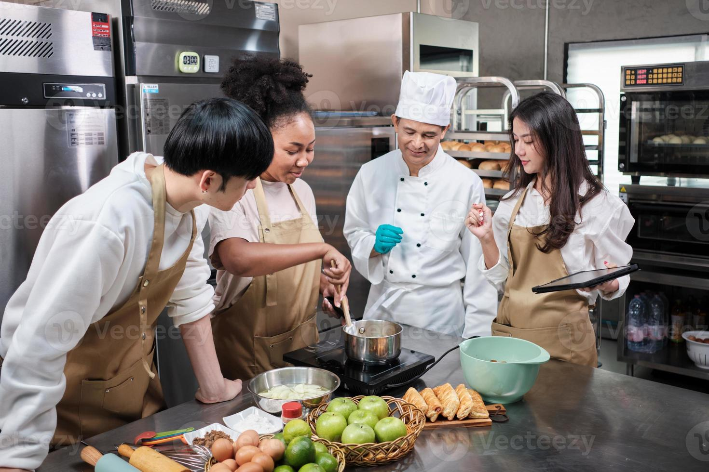

Formando nuevos talentos en gastronomía

Desde hace varios años, Pastelería Mil Sabores mantiene un vínculo cercano con estudiantes de gastronomía de Duoc UC, ofreciendo espacios de práctica donde pueden aprender de nuestros maestros pasteleros con años de experiencia.
Cada compra que realizas en nuestra tienda online contribuye directamente a financiar estas prácticas, permitiendo que más jóvenes puedan formarse en un oficio que combina técnica, creatividad y tradición.
Muchos de nuestros actuales pasteleros comenzaron justamente así: como estudiantes en práctica que, con el tiempo, se convirtieron en parte fundamental del equipo. Creemos firmemente que invertir en la nueva generación de pasteleros es invertir en el futuro de la repostería chilena.
Si eres estudiante de gastronomía y te interesa conocer más sobre nuestras oportunidades de práctica, no dudes en escribirnos a través de nuestra sección de contacto.